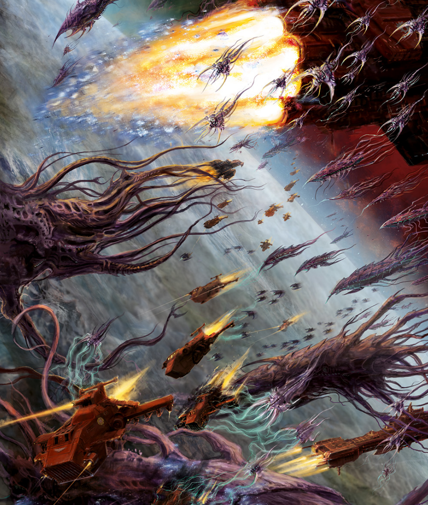

Dossier xenos 803.M41
Une flotte-ruche n’est pas une flotte au sens impérial du terme. Elle ne transporte pas une armée. Elle est l’armée, le prédateur, l’arme et la gueule ouverte qui précède la fin d’un monde.
Là où les vaisseaux humains sont faits de métal, de serments et de machines anciennes, les vaisseaux tyranides sont des organismes vivants. Des masses biologiques colossales dérivant dans le vide, capables de traverser les ténèbres interstellaires avec une patience inhumaine.

ORIGINES ET NATURE
Lorsqu’une flotte-ruche approche d’un système, les premiers signes sont souvent confondus avec des perturbations ordinaires. Silences astropathiques. Anomalies gravitationnelles. Disparitions de sondes. Puis les communications se dégradent, les psykers s’effondrent, et l’ombre dans le Warp recouvre lentement le monde condamné.
Ce n’est qu’ensuite que les formes apparaissent. Immenses, organiques, hérissées de crocs, d’éperons, de spores et de carapaces. Elles ne ressemblent pas à des navires. Elles ressemblent à des prédateurs trop vastes pour avoir besoin de se presser.
Chaque flotte-ruche agit comme une extension de l’Esprit-Ruche. Behemoth, Kraken, Leviathan et d’autres encore ne sont pas de simples armadas. Ce sont des méthodes différentes d’une même faim.
Certaines frappent directement avec une brutalité écrasante. D’autres se divisent, infiltrent, encerclent, épuisent. Toutes apprennent. Toutes reviennent plus adaptées qu’avant.
STRUCTURE ET DOCTRINE
Une fois l’invasion engagée, le monde ciblé devient une réserve de biomasse. Les spores pleuvent. Les organismes de combat se déversent. Les défenses orbitales sont saturées. Les continents sont disséqués zone par zone.
Les flottes-ruches ne pillent pas. Elles ne laissent aucune occupation. Elles ne réclament aucun trône. Elles consomment les mers, les forêts, les villes, les bêtes, les hommes, les morts et jusqu’aux micro-organismes du sol.
À la fin du processus, il ne reste pas un monde conquis. Il reste une sphère morte. Stérile. Raclé jusqu’à l’os minéral.
Les forces impériales ont parfois réussi à repousser ou fragmenter certaines flottes-ruches. Mais repousser une vrille n’est pas vaincre l’ensemble. Les fragments dérivent, s’adaptent, cherchent de nouvelles proies.
MENACE ACTUELLE
La véritable horreur tient dans cette possibilité. Les flottes déjà rencontrées pourraient n’être que les éclaireurs d’un organisme galactique plus vaste. Si cette hypothèse est exacte, alors chaque victoire impériale n’est qu’un retard acheté au prix du sang.
Face à une flotte-ruche, la doctrine impériale doit être totale. Destruction orbitale. Quarantaine. Exterminatus si nécessaire. Aucune récupération non contrôlée. Aucun spécimen vivant. Aucune confiance dans un monde déjà touché.
Fin de l’extrait. Toute flotte-ruche détectée doit être considérée comme menace d’extinction planétaire immédiate.